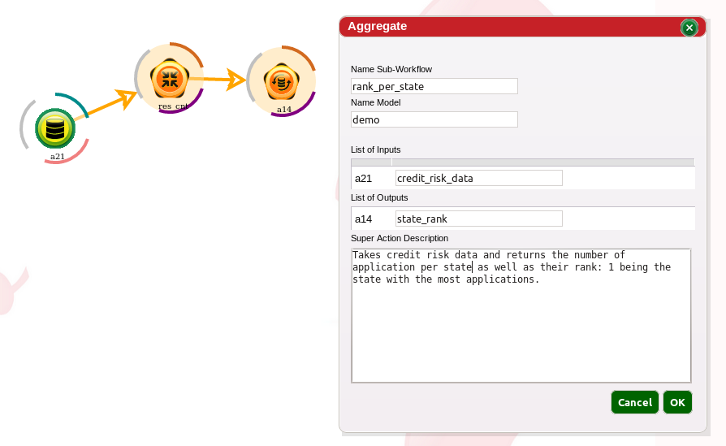

Super Actions are a logical group of actions, have a name and are included into a model. Super Actions can be reused in any other workflow and included into the user's footer. A user creates a super action with the Super Action Aggregate.
Steps to create a super action using super action aggregate
Super Action Aggregate will always install the Super Action in the user scope. The user can choose the model name under which the Super Action is installed. In a Super Action, inputs and outputs have to be declared and the names have to be unique and less than 15 characters. There is also an option of adding a comment to guide future users.
The easiest way to modify a Super Action is: